Debian is a very stable GNU Linux distribution which makes it a strong candidate for web servers. Here we will discuss
how to install ruby on rails in debian.
Before doing anything, make sure your system is up to date.
bash
sudo apt update && sudo apt upgrade
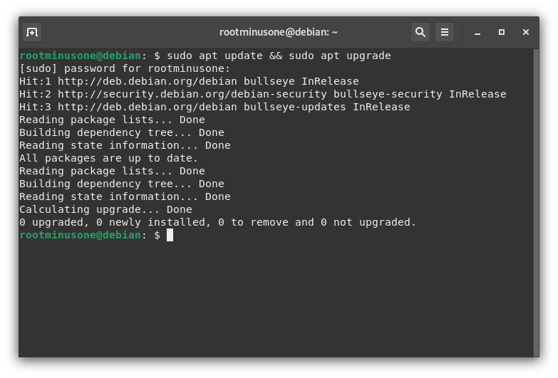
installing apache
Apache is a free and open sourced web server to test if our rails server is up and running. To install apache, run:
bash
sudo apt install apache2
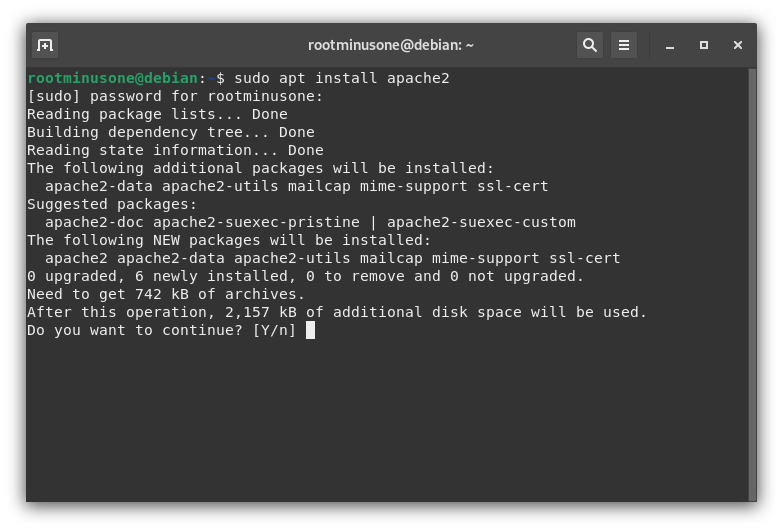
installing curl
Since debian is shipped with old packages, some packages won't run without the latest versions. That's why we need to
add those programs' repositories to our /etc/apt/sources.list file. That's
why we need curl for importing the gpg keys of those repos.
To install curl, execute the following command:
bash
sudo apt install curl
installing ruby
Since rails is based on ruby. We need to install it first. Run:
bash
sudo apt install ruby ruby-dev
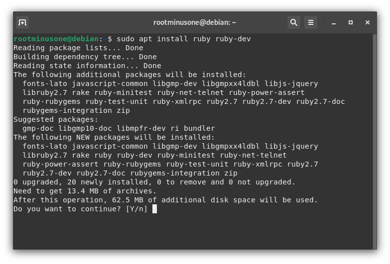
installing additional components
Now we need some additional packages to be installed. First, install nodejs since it might be useful:
bash
sudo apt install nodejs
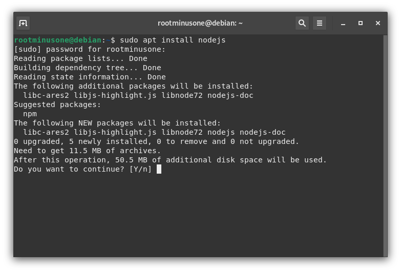
We also need standard GNU C++ compiler for some libraries to work:
bash
sudo apt install gcc g++ make
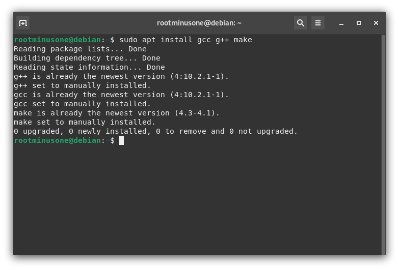
installing rails
To install rails, simply run:
bash
sudo gem install rails
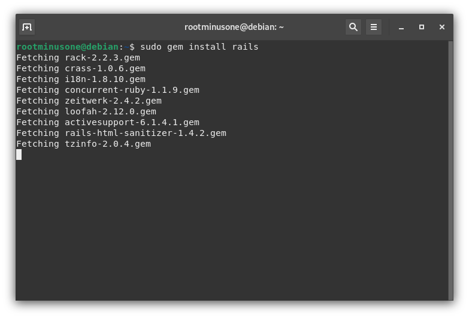
However, we are not done yet. We need some more components to be installed for database management.
installing yarn
Although debian has yarn in its repo, it is not up to date. For that we need to install it from another repository. To import them,
execute the commands one by one:
Now we need to install packages that deal with database management. Here we will use sqlite. Install
the below packages:
bash
sudo apt install sqlite3 libsqlite3-dev
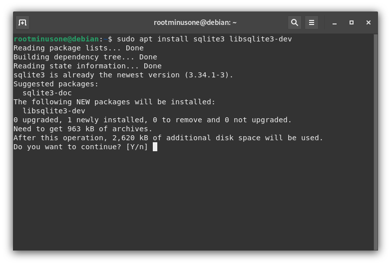
Install the gem library of this package:
bash
sudo gem install sqlite3-ruby
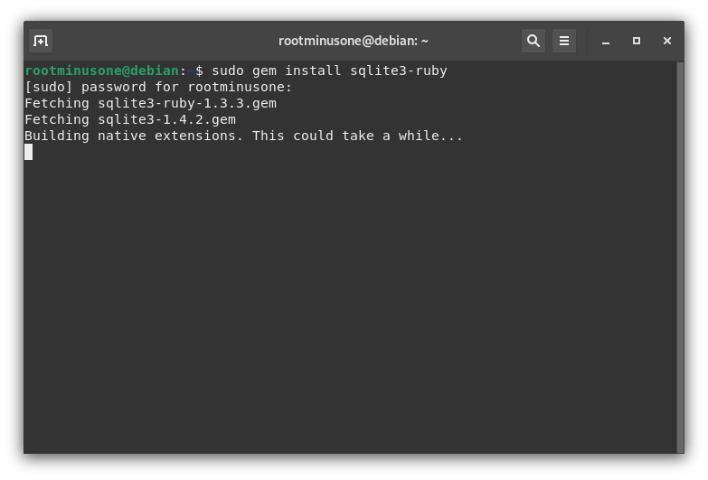
creating app
Once you have installed all the necessary packages, now it's time to install the app. Execute the commands one by one:
bash
rails new firstapp -d sqlite3
cd firstapp
rails server
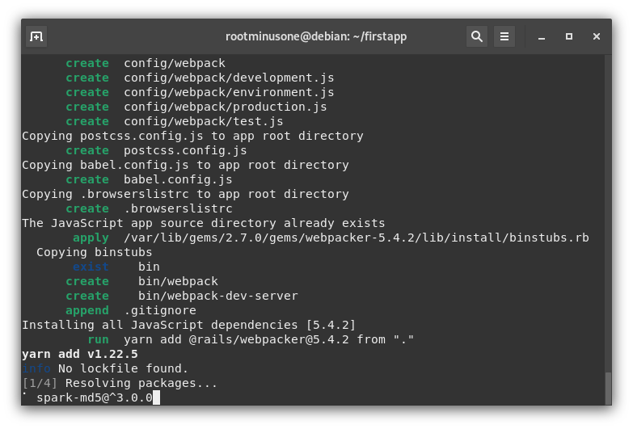
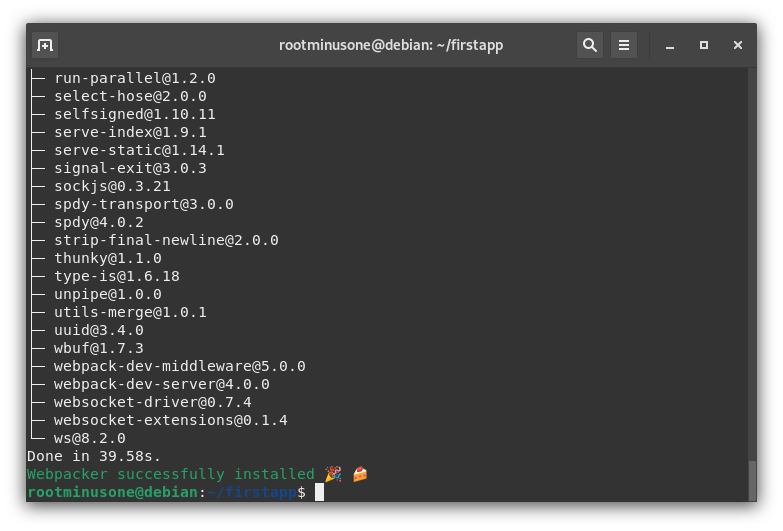
testing the app
Finally now its the time to check if everything went fine or not. Run the below command in the
firstapp directory.
bash
rails server
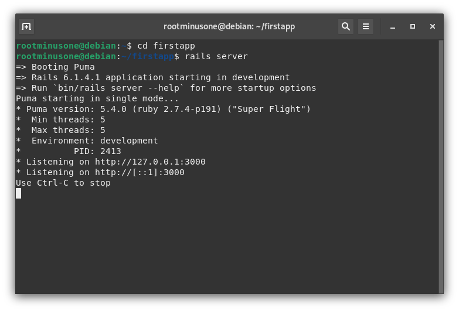
Now navigate to the given link and see if everything went well. If successful, you will see the welcome
screen in the browser.
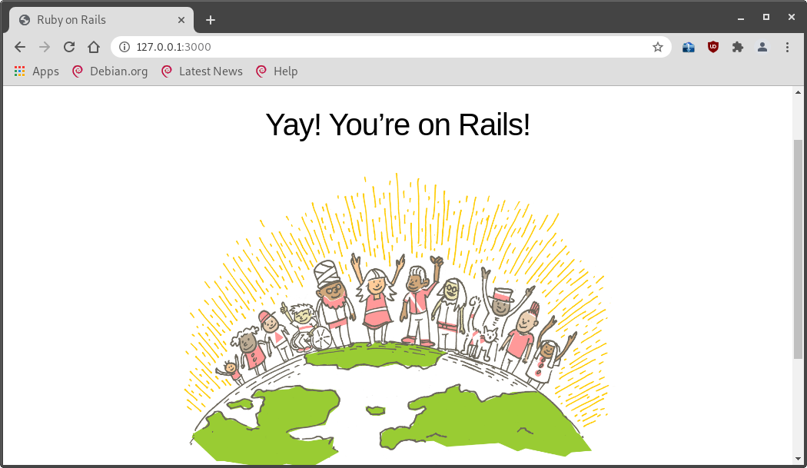
That's all for now. Enjoy the rails server as you like :)